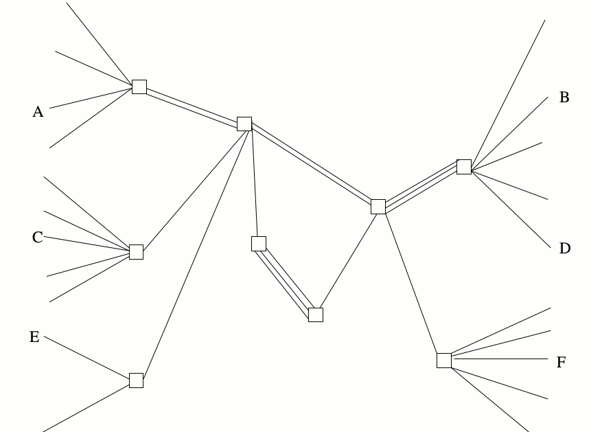
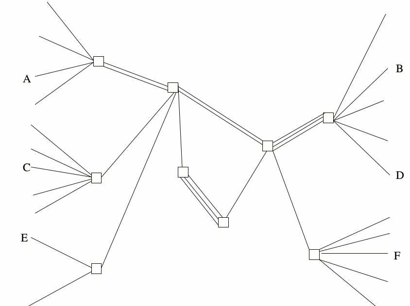
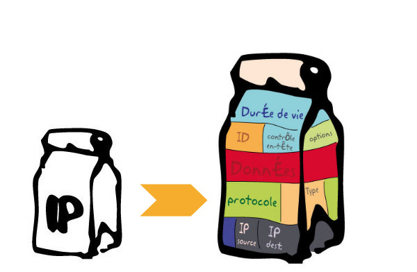

C’est quoi Internet ?
Note: 1.Un peu d’histoire. 2. La structure 3. Les DNS et les blocages
- Instagram…
- Mais pas que
Note: tout ça, c’est le web (http)
- Téléchargement de fichiers
- VoIP
- Chat
- D’autres usages : DNS, BGP, ssh, Telnet
Note: il existe d’autres usages et services que le www. À chaque usage correspond un protocole. Qu’est ce que’un protocole ? On le verra plus loin.

Dates clés
- 1969 : Arpanet
- 1993 : Le world wide web
Arpanet
L’ancêtre d’Internet. Ce réseau cumule les deux caractéristiques qui ont fait le succès d’Internet :
- Dès sa création : la commutation par “paquets” dans un réseau non centralisé
- 1973 : la communication inter-réseaux
Note: Arpanet est créé par la Darpa, une agence de recherche technologique de la Défense des États Unis. On reviendra sur les liens gvt / défense et technologies Internet. ARPANET n’a pourtant été conçu que pour faciliter les télécommunications entre chercheurs. Arpanet bénéficie à la fin des années 80 avec une maj matérielle qui le rend arpanet accessible à une plus large échelle. Vinton Cert et Robert E. Kahn. D’autres initiatives ailleurs, en Europe notamment avec Cyclades et Louis Pouzin.
Le Web
Parmi tous les services et disponibles sur Internet, le Web est celui qui a fait exploser le nombre d’utilisateurs d’Internet
1989
Tim Berners Lee, chercheur au CERN, propose de développer un système hypertexte organisé en toile (Web), afin d’améliorer la diffusion des informations internes. En gros il invente les liens.
1993

Le CERN renonce aux droits d’auteur sur le World Wide Web. L’utilisation du web explose.
Note: un mot sur les logiciels libres.
Comment ça marche
Commutation par circuit
Réseau téléphonique, ferroviaire, electricité

Commutation par paquet
Internet

Note: c’est ça Internet. La différence avec le Minitel. Un service par minitel. Contrairement aux sites web : de multiples sites consultés en même temps. Internet ne fait que router des paquets d’informations. C’est cette archi en paquet qui a fait exploser internet : machines relais bp moins cher à fabriquer.
Paquet

- Un paquet est un ensemble de données
- Ils sont transportés sur Internet par des machines appelées “routeurs”
- Les routeurs ne connaissent que l’expéditeur et le destinataire et certainement pas ce que contiennent les paquets. Internet est un réseau “sans intelligence”. Celle-ci est déportée sur ses extréméités, les clients et serveurs.
Note: Pas de câble entre chez toi et Youtube. Forcément il y a des relais.
Adresses IP
Un paquet, tout comme un courrier postal, a besoin pour arriver à bon port d’une adresse expéditrice et d’une adresse destinatrice. Ce sont les adresses IP.
exemple de route : 182.56.12.54 vers 217.114.203.171


Noms de domaine et IP
Les humains et les machines ne parlent pas le même langage : 217.114.203.171 n’est pas le type d’adresse qu’on table dans un navigateur. Nous c’est plutôt www.cfj.com.
Domain Name Server (DNS)
Blocages et censure

Note: Techniquement. Juridiquement : loi terroriste de 2014
Contourner les blocages
- En changeant de serveur DNS
- En passant par des tunnels VPN
- En utilisant le navigateur Tor
On reste en contact
- https://nothing2hide.org
- contact at nothing2hide.org // GPG ID: 58519BC4
- Twitter : @n0thing2hide
- Facebook : Non
Contact
- Courriel : contact@nothing2hide.org
- GPG : 6A22 9E8D 916A 1C3C 80A6 E180 D1A6 2CFD 5851 9BC4
- Twitter : n0thing2hide
- Facebook : non